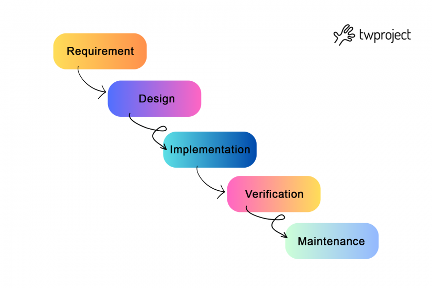

Waterfall ehk kosemudel
Waterfall on üks esimesi tarkvara arendus mudeleid tavaliste
tootmisprotsesside eeskujul, kus iga ertapp eelneb järgnevast. Tagasipöördumine eelmisesse
on keeruline. Eelnevas etaois vea avastamine,tähendab seda, et vea juurde saab tagasi
pöörduda alles siis, kui tarkvara on kasutusse läinud
-
Etapp- Nõude määratlemine:
Selles etapis dokumenteeritakse arendatava toote/tarkvara/süsteemi nõuded,käitumine.
sihtriistavra jms. mis arendatava tarkvara taalusliku funktsioneerimise tarbeks vajaliku.
vahest jaotatakse see etapp ka omakorda kaheks - süsteemianalüüs ja nõuete analüüs.
-
Etapp- Süsteemi ja tarkvara kavandamine:
Teises etapis kavandatakse arendusel olev süsteem ja tarkvara keskendudes nende põhilistele
omadustele. põhiomadusteks võivad lla: Andmestruktuur, tarkvara arhitektuur, liidesed,
liideste omadused ning protseduurilised ja algortilised detailid. Kavandamine tulemused
dokumenteeritakse mille abil hinnatakse teostuse käigus projekti kvaliteeti.
-
Etapp- Teostus ning modulite testimine:
Eelnevalt dokumenteeritud kavandid järgi toimub kolmandas etapis tarkvara/süsteemi arendus.
Arendustöö käigus arendatakse programm moodulhaaval või moodulite kogumikuna. Peale
programmeerimist teostatakse modulite ja kogumite testimised.Olenevalt eelnevalt
dokumenteeritakse kavandi detailsusest tuleneb selles etapis projekti arenduslihtusus
Mida rohkem detaile on kavandatud, seda lihtsam on arendustöö
-
Etapp- Integratsioon ja süsteemi testimine:
Toimub kogu tarkvarasüsteemi testimine. Peale testimist tarnitakse toode klendile või.
kasutajate sihitusrühmale. testitakse sellest vaatepunktist kas süstem teeb seda mis
eelnevalt dokumenteeritud ning testitakse ka seda et süsteem esinevad detailid on
loogilised
-
Etapp- Kasutamine ja hooldus :
Kõige pikem tarkvara elustsüklis olev elu etapp. Siin toimub vigade parandus, Funstioonaalsus
muuninem (kas siis klendi, turu, keskond, või sihtrühma sisendi/vajadusena). Arendustöö
teostamiseks korraldatakse kõiki eelmisi etappe, kuid siis ainul süsteemi muutmis eesmärgil
mitte enam nullist milegi uue arendamise jaoks
Igal etapi tulemusena tekib dokument(kas siis üks või mitu) mis kirjeldab etapis saavutatud tulemit.
Kõik dokumendid kinnitatakse. Järgmine etapp ei tohi olla samaaegselt töös kui eelmine pole lõpetatud
kuigi mingi ülekate siisiki on, ning infot on võinalik edastata ühest etapist edasi teisele.

| Head |
Halvad |
| Kindlad nõuded |
Mitte paindlik |
| Lihtne hallata |
Mis sa tahad alguses saad alles lõpus |
allikad:
"Õpetaja pealt kirjutamine(ei teadnud mis linki võtta)"